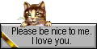
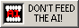
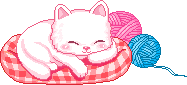

｡𖦹｡° flowers turn to face it ｡𖦹｡°
｡𖦹｡° Welcome ｡𖦹｡°
Hello, I'm Damian (They/She/He) and this is my personal site!
It is intended as both a portfolio of my projects and as a mode of self expression.
I have a lot of interests and projects that I like working on periodically but I don't like posting to social media because it feels performative, and because I don't want corporations having a piece of my creativity. I love the community here on neocities, it feels so organic and human. The effort that we all put into our personal sites is beautiful and it means we all have something in common- our creativity!






｡𖦹｡° Journal ｡𖦹｡°
2/15/2026 2:37pm
Finding a new way to think, finding a new way to feel.
It's become clear to me that a lot of what we call "personal development" or "wellness" is a distraction from the collective action we need to take to liberate each other. Sure, be your best self- hit the gym, take your vitamins, practice meditation, but what really holds us back from actualization is our shared oppression. I can't be free until everyone is free. There's so many memes right now about people wanting to escape the permanent underclass that is coming (or here already) to envelop us all, but would you really be happy with your wealth knowing that all your peers are destitute? Are you really happy walking out of a nice restaurant when there's a homeless man sleeping on the street? There's a limit to the happiness you can feel at the expense of others- there's a limit on your humanity if you can feel happiness that's actually selfishness.
We just had the superbowl here in Santa Clara, which meant the whole IATSE union was taking calls to be stagehands for the show, so I got to take the calls that the senior guys usually take. And I really mean senior btw- your place on the union call list is determined by the number of shifts you've worked, meaning that older guys who've been doing this for decades always get the call first, even if they can't work a light board or need a hip replaced. Me and a lot of the younger people have to fight to get calls, and I get passed up for calls when there's a hot guy with the same skill set as me (evil gay guy nepotism runs show business). I've laid marley with guys that belong in nursing homes fr. But I was a stage hand for a broadway production of the Wiz, which was cool.
12/01/2025 7:54pm
~ The window got smaller so my heart got smaller too, I used to love the world and now I only love you. I used to want to grow up, now I just want to close my eyes. I didn't know that'd be the last time, so I didn't say goodbye. ~
Everyone was right about exercise and lowering your screen time... unfortunately.
I feel like I get sidetracked by a lot of random little hobbies I have when I really should just be working on my music 24/7. Like. Why am I making elaborate ribbon rosettes all day. Why do I use twitter. Its genuinely a form of self harm at this point.
I think I fear becoming too intellectual and fear the actual use of my talents because I don't want to find out that I am actually mediocre, or that these things are meaningless and won't make me happy. Because sometimes it certainly feels meaningless.
I am not much happier after I play a show, most times. Maybe its because I feel like we've stagnated a little as a band. Maybe its because I don't really enjoy the company of a lot of the people who come to our shows, I don't feel like they like us or understand me. I feel like a lot of the conversations I have with people are surface-level, and that I'm not connected to them and we don't learn anything from each other.
I think there are forces at play in the world that are making everyone stupider- including me. We spend all our time at jobs that don't address the real issues that are obvious to everyone. Gun violence is everywhere, everything is unaffordable, the climate is being destroyed, our government is run by pedophiles, and our taxes fund genocide. And we go to work and pretend that what we do matters at all. Sorry. Big downer.
On a surface level I am pretty much everything I wanted to be as a child. I have an interesting, creative job. I have a boyfriend I love. I'm in a band and I play shows. I have friends. I just didn't know the world would get leaner and meaner. I didn't know that there's more to life than being individually fufilled. Because we could throw the greatest show ever and go on a massive tour but the grand context in which it would all take place is fascism. I don't want to be happy and successful under fascism- I should be laying down in front of a tank right now.
11/09/2025 6:57pm
"The cream of the crop of the groove..." - Lexi
Okay so I have been meaning to move out of *CENSORED* and move in with Chai for a while. And I have been talking with Sofia about it recently when we went to go pick up that drop leaf kitchen table from fb market. (Which I am sitting at right now.) And Sofia just told me that Lysha (not sure if I'm spelling that right.) wants to move in really soon, like December or January.
Which is scary! but also kind of like the kick in my ass that I kind of need? Because I do want to live wiht Chai, and I feel like living here is only straining my relationship with Luka, who I really do like and want to reamain friends with.
I honestly think my biggest fear with moving out is that I won't be friends with Sofia and Luka anymore. But I think that like stems from my own problems with not reaching out to people and making plans with them. Like, if I don't stay friends with them after I move it is lowkey my own fault. If I do this correctly, it should force me to be more intentional and direct in the way I care about them and all my friends in general.
Also moving just kind of sucks in general, like, I have a lot of Stuff and I dont want to get rid of my stuff tbh, so I'll almost certainly have to get a storage locker or just get rid of a lot of shit.
It's good, actually. It's just daunting.
Anyway. My grand plan is that after I move out, Luka, Sofia, Raven, Iffy, Lauren, Chai, Lexi, Aidan, and I will form a regionally important artists collective that we could possibly call Taxidermy Dollhouse. We will interview bands, write articles, publish zines, host parties, and throw shows. We will be an important cultural movement in the South Bay, all of the Bay Area, and eventually in the United States in general. But mostly this is about having an excuse to hang out with my friends.
11/06/2025 12:06am
"Every morning the maple leaves." [^1]
There's always someone out there who is just like you- and when you meet them it might make you feel good. Or it might make you realize how annoying you are. Maybe you don't think about this person at all.
Talking to Luka's friend Jonathan at the Halloween party was kinda crazy and just made me realize I'm the not only grown ass adult who still has a tumblr account. I dont expect people in real life to quote Richard Siken at me- but he's a very popular poet. There's no need for me to be so surprised. I just haven't been prioritizing keeping people in my life who have the same niche interests as me. Which has actually been kind of nice.
I feel like it frees me up to explore new things whenever I want. Theres not a clique that I belong to that wants to keep my aesthetic matching theirs when we go out. I remember how upset Emerson was when I stopped presenting masculinely and how immature and even perverse their reaction was.
There are boundaries between people that are sacred but not obvious. It seems like its hard for most people to tell where they end and others begin. Love lowers those boundaries, and it is easy to feel entitled to the inside of someone's sphere, but you never are.
I have been very happy spending my time with people who have fairly different interests than I do. It makes me feel like we are all real individuals on different paths of equivalent importance. You can enjoy people without understanding them, and this frees you from the illusion that you can ever fully understand someone. (Just float around their sphere as long as they will allow you to.)
I've also been enjoying changing. I think there is certainly a core of myself that I stay very true to, and that is pretty much who I was when I was thirteen. But that person is someone who wanted to explore a lot of wildly different things, "so now I can't stop changing all the time."[^2] I've just been picking up and dropping hobbies like crazy. I feel like learning one skill just makes other things easier. That's how good things just snowball, or some artists just switch from medium to medium and everything they make is excellent. You just have one flow coming through you but you can probably send it down whatever path you choose- so long as you develop skills in that path that allow that flow to move. If that makes any sense. ("everything in the world is exactly the same") [^3]
A skill I want to work on this month (maybe forever) is going slow. I'm not good at it. I'm addicted to instant gratification, my phone, Chai solving problems for me, sugar, twitter, tiktok, anger, etc...
Slow is safe; safe is smooth; smooth is fast. I haven't been making as much progress as I should be in the things I want to create or skills I want to develop because it doesn't even occur to me to work slowly and consistantly. I just bum rush my way through things because most things are easy for me, but when things are hard I give up immediately and say I'll return to them later. But then I don't. ("Know when to quit vs. Never give up") [^4]
Much to think about.
--------------------------------------------
References
[^1]: https://www.poetryfoundation.org/poems/48158/litany-in-which-certain-things-are-crossed-out
[^2]: Extraordinary Machine
[^3]: https://www.youtube.com/watch?v=qZSWKDRuY24
[^4]: https://store.tomsachs.com/products/paradox-bullets-zine

updates
3/11/2026
Created the Library
3/7/2026
Added a Return Home Button to Sites and About Me
Added an Updates and To Do sections to Home Page
To Do
- Library Page
- Astrology Page
- Hobonichi / Notebook Page